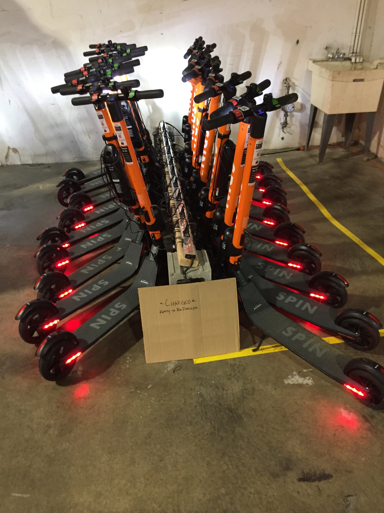
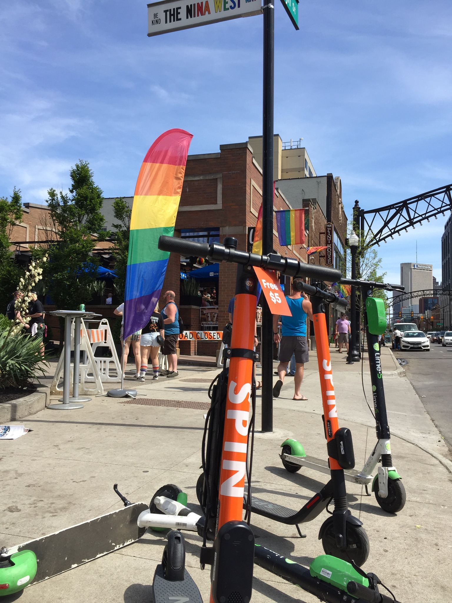
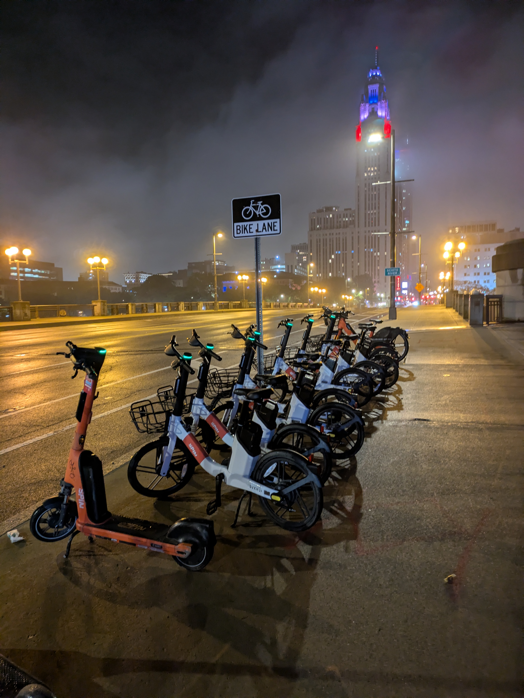
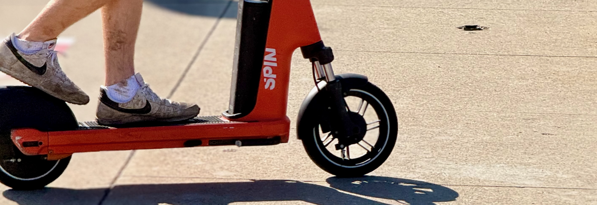
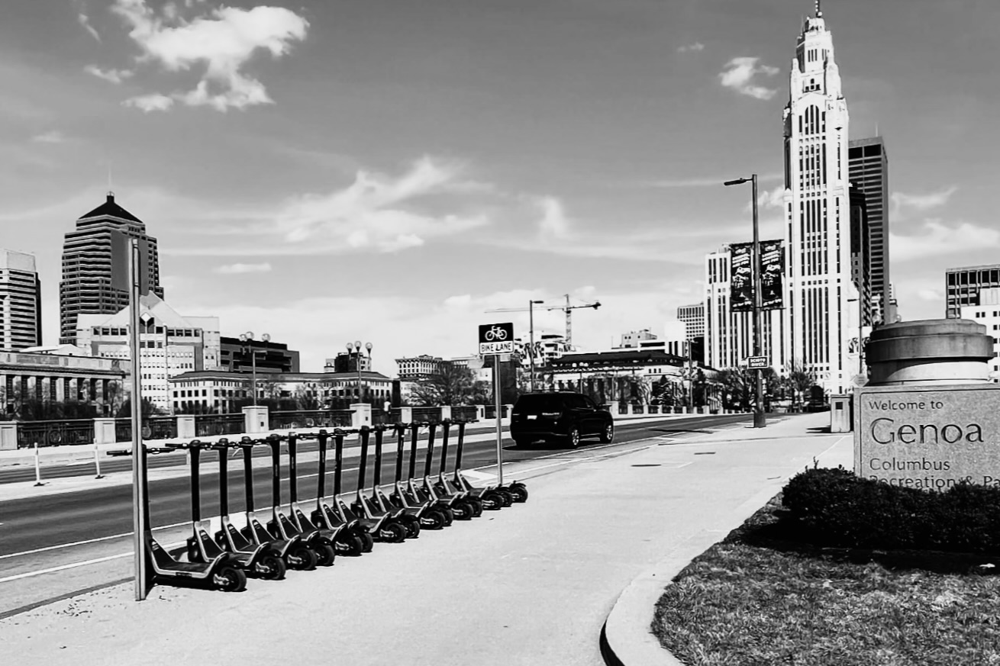

A photograph, as one chapter closes
Seven years.
One chapter, closing.
One chapter, closing.
Field notes
The chapter really started on June 1, 2019 — my first day at Spin.
I took this photo four years into it — June 29, 2023, 11:08 PM — late one night, after a long day, mostly because the light looked good. I didn't know yet it would end up marking the middle of something. I definitely didn't know I'd be looking at it again years later, at the end.
Not scooters. Not an arch. A city, mid-exhale — opening itself up to a different way of moving through it. The arch behind them is the last piece left of Columbus's old Union Station, saved from the wrecking ball in 1979 and moved here to keep watch over a park instead of a platform. Underneath it, a small fleet sat waiting for whoever needed it next.
I took this photo four years into it — June 29, 2023, 11:08 PM — late one night, after a long day, mostly because the light looked good. I didn't know yet it would end up marking the middle of something. I definitely didn't know I'd be looking at it again years later, at the end.
Not scooters. Not an arch. A city, mid-exhale — opening itself up to a different way of moving through it. The arch behind them is the last piece left of Columbus's old Union Station, saved from the wrecking ball in 1979 and moved here to keep watch over a park instead of a platform. Underneath it, a small fleet sat waiting for whoever needed it next.


The throughline
Millions of rides later, that's the part I keep coming back to: that arch was built in the 1800s for a railroad that no longer exists. It didn't get to keep its original purpose. It got a second one, and it's still standing because of it.
Chapters end. The work doesn't have to. Movement, done right, was never really about the vehicle — it's a promise that outlasts whoever's holding it at the time.
Chapters end. The work doesn't have to. Movement, done right, was never really about the vehicle — it's a promise that outlasts whoever's holding it at the time.

Union Station,
Columbus — early 1900s
Columbus — early 1900s

Behind the fleet
Somewhere in seven years, this stopped looking strange to me. A bridge, a bike lane, a fleet lined up in the fog — just Tuesday night in a city that decided to make room.

The details
Worn shoes on a scrappy deck — the part nobody photographs, the part that was actually the job.

Now
So this is me, closing a chapter and looking at the photo that opened it. I don't feel nostalgia. I feel grateful — for the team, the riders, and a city that kept showing up long enough to let this mean something.
Steven Needham